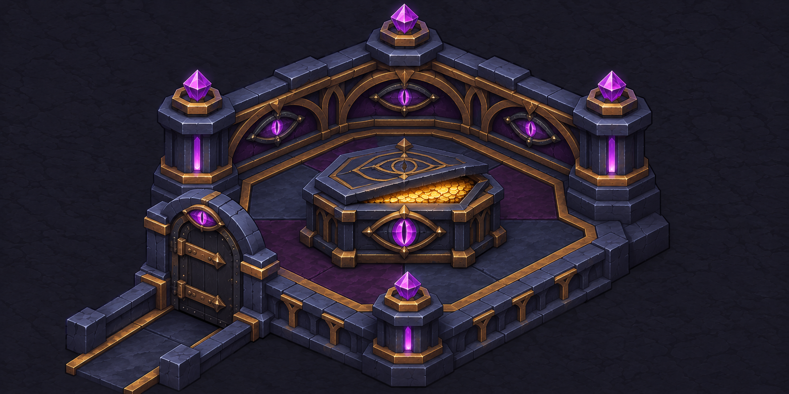
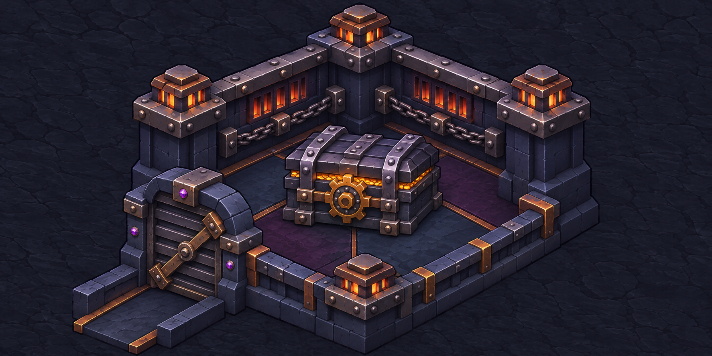
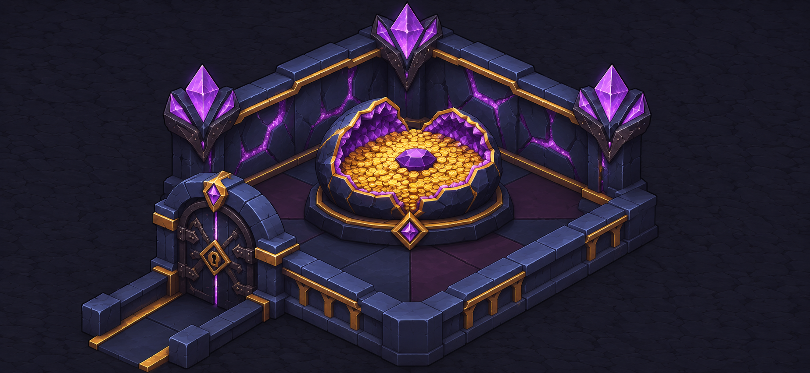

A · RituelLe Reliquaire de l’ŒilLe même œil veille sur l’entrée, les murs et le couvercle. Un filet d’or apparaît sous la dalle entrouverte du reliquaire.
B · BlindageLa Forge enchaînéeLes chaînes suivent les murs jusqu’à la porte barrée. Au centre, les sangles de fer et la roue de verrouillage donnent au trésor le poids d’un coffre-fort.
C · Roche vivanteLa Géode du tributLes veines violettes des murs rejoignent une géode fendue. Les pièces d’or forment une seule réserve dans son creux.